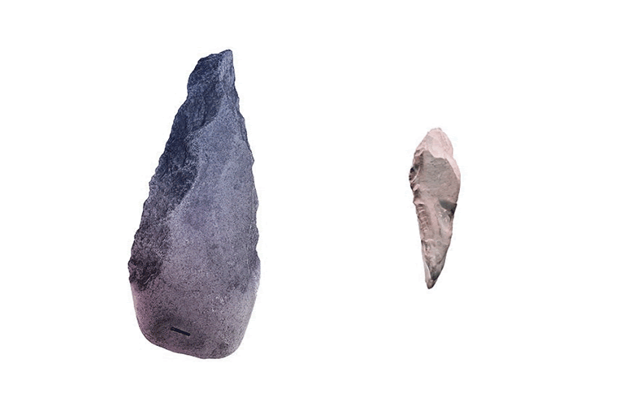

Este post que hoy recupero aquí lo publiqué en febrero de 2016 en el ya extinto blog de las Arinspunk. Lo escribí después de ver una charla TEDx de Tommaso Ghidini (ESA) que me dejó loco. En ella, Tommaso argumentaba que, con las impresoras 3D, deberíamos olvidarnos de la simetría y abrazar la asimetría, la forma en que la naturaleza proyecta.
Quizás sea solo la opinión equivocada de alguien que no conoce mucho sobre la impresión 3D, pero tengo la sensación de que aún queda mucho camino por recorrer en esta aproximación. ¿Tú qué opinas?
Nuestra tecnología, desde las primeras y rudimentarias herramientas, es principalmente de tipo sustractivo. Esto significa que para construir un objeto, quitamos material de una porción inicial de materia prima hasta obtener la forma deseada.

Con la aparición de las impresoras 3D, este enfoque cambia. Pasamos de una técnica sustractiva a una aditiva, ya que las impresoras 3D no quitan, sino que añaden material.
Este cambio puede pasar desapercibido inicialmente, oculto detrás de otros aspectos con los que el fabbing está revolucionando la producción industrial:
Pero conlleva una consecuencia significativa (y muy interesante) desde el punto de vista del diseño (de producto): la muerte de la simetría (o su inutilidad).
La simetría es fundamental a la hora de producir piezas de forma sustractiva, ya que un objeto es más fácil de fabricar si tiene formas simples dispuestas en ejes simétricos. Pero con la técnica aditiva, esta simetría ya no es necesaria. Para una impresora 3D, tanto da imprimir un objeto simétrico como uno asimétrico.
Entonces, ¿por qué no seguir diseñando objetos simétricos[1] y aprovechar la reducción/simplificación en la fabricación mediante la fabricación? Porque la asimetría abre una nueva puerta: diseñar/producir como lo hace la naturaleza.
En la naturaleza, nada es realmente simétrico[2], pero esta ausencia de simetría no disminuye la calidad de las estructuras naturales, todo lo contrario. Millones de años de evolución han creado innumerables (y excelentes) soluciones para tantos problemas. Soluciones que están esperando por nosotros para ser aplicadas en nuestros objetos.
Por eso, replicar piezas simétricas con una impresora 3D, solo porque es más fácil y barato, es un error. Para aprovechar toda la potencialidad que esta nueva tecnología nos ofrece, debemos dejar de pensar como lo hicimos hasta ahora y comenzar a diseñar como lo hace la naturaleza, de manera orgánica y asimétrica.

¿Permeará en algún momento este diseño orgánico, del diseño de producto al diseño gráfico?
Aplicarlo en el diseño editorial y web, quizás sea un poco forzado. Pero, ¿cómo diseñaremos para una pantalla flexível adaptada a las formas de un objeto tridimensional? ¿Cómo será el diseño gráfico para la piel digital de un pulpo elétrico?
[1] El trabajo con formas asimétricas rara vez fue más allá del carácter ornamental, o lúdico/provocativo.
[2] Simetría bilateral y radial no son simetrías exactas (geométricas).
La imagen "Bifaces de piedra" es un gif hecho a partir de fotos de Didier Descouens – CC BY-SA 4.0